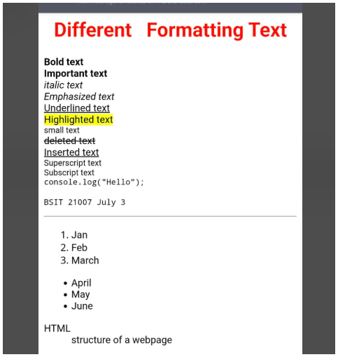
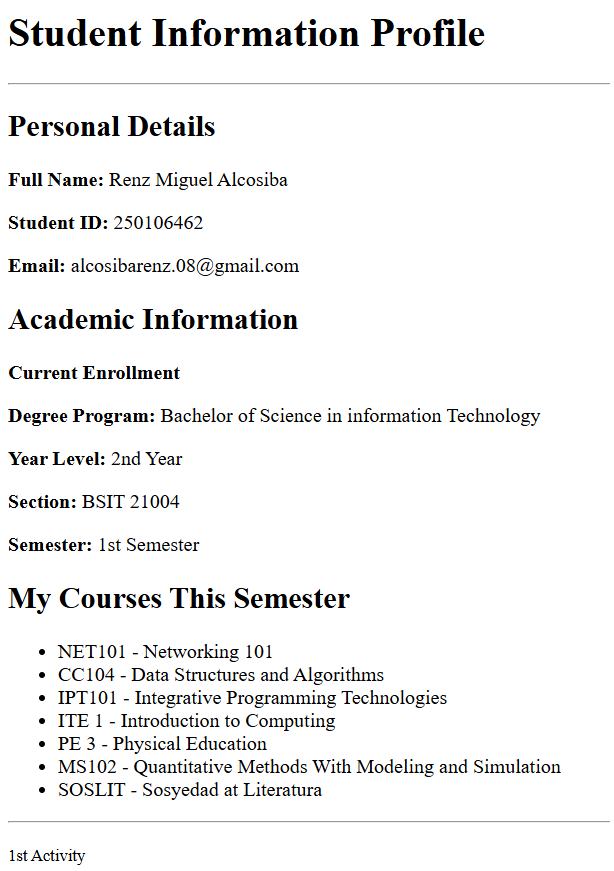
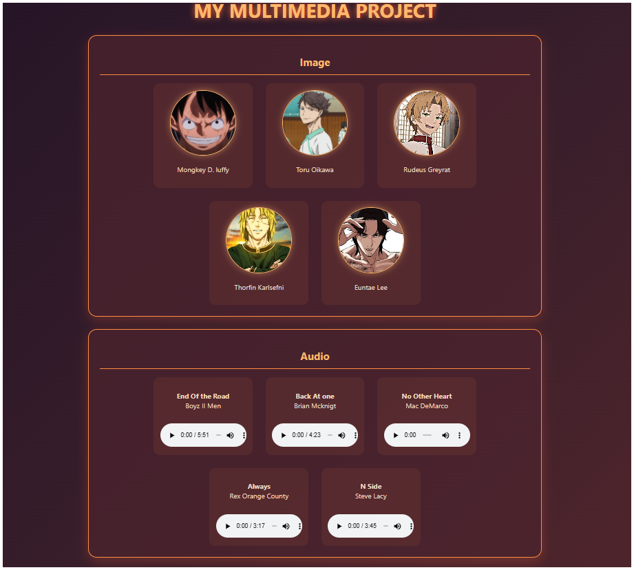
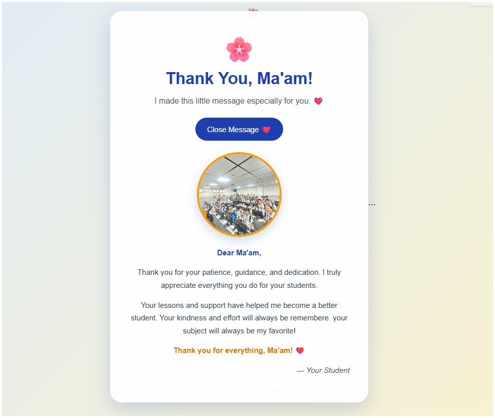

HTML & CSS
Creating and styling website layouts.
WELCOME TO MY PORTFOLIO
Welcome to my personal portfolio. Here you can explore my background, technical skills, and school activities as an Information Technology student.
Explore My Activities ↗GET TO KNOW ME
I am a Bachelor of Science in Information Technology student. I am learning programming, web development, networking, and other technologies through my classes and activities.
My goal is to improve my knowledge, develop useful technical skills, and become a professional IT practitioner in the future.
Program: BS Information Technology
Interest: Programming and technology
Goal: Professional IT practitioner
Location: Philippines
WHAT I'M LEARNING
Creating and styling website layouts.
Adding interactions and functionality to websites.
Practicing conditions, loops, functions, and OOP.
Learning IP addressing and basic network concepts.
MY SCHOOL OUTPUTS
Here are my activities and outputs throughout the semester. Select a category to view its activities.

Different Formating text.

Student Information Profile.

My Multimedia Project.

Message to my Teacher.
GET IN TOUCH
You can find me through my school email or GitHub profile.
Email: markbautista462@gmail.com
GitHub: markdebug9999